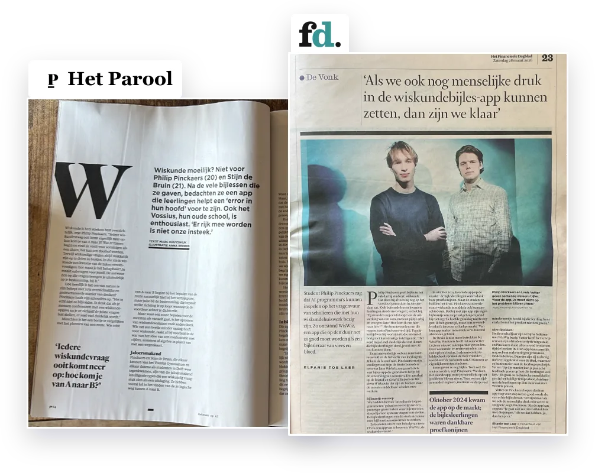

Betaalbare wiskundebijles die altijd klaarstaat.

Hoi! Ik ben Philip, een van de ontwikkelaars van WisWiz. In WisWiz stoppen we alles wat we in jaren bijles geven hebben geleerd. Heb je nog vragen? Bel me gerust. Of lees hieronder wat ouders en leerlingen over WisWiz zeggen.
Bel Philip 06 30 23 16 40“We gebruiken het meestal samen. Ik lees het en leg het aan haar uit. Op die manier kan ik haar veel beter helpen. Als we deze app niet hadden gehad had ze waarschijnlijk wel op bijles gezeten.”
“…ik heb namelijk echt heel veel aan WisWiz gehad voor hoofdstuk 14.”

 Vossius Gymnasium
Vossius Gymnasium
Leerlingen van het Vossius Gymnasium gebruiken WisWiz om toetsen voor te bereiden.
 Stichting Wijs Bijles
Stichting Wijs Bijles
Bijlesleerlingen van Stichting Wijs Bijles krijgen WisWiz, ook voor hulp buiten de bijles.

‘WisWiz is een krachtige tool waarin verschillende kwaliteiten van kunstmatige intelligentie gecombineerd worden voor persoonlijke leerervaring.’
Martijn Koper, Stichting Wiskunde Actief
Bekend uit Het Parool en het FD. Vertrouwd door het Vossius Gymnasium, Stichting Wijs Bijles en Stichting Wiskunde Actief.
Onze missie
Bijles voor iedereen, overal ter wereld
Talent komt tot bloei onder persoonlijke begeleiding. Zo had Alexander de Grote les van Aristoteles, die op zijn beurt leerling was van Plato. In de klas is daar helaas te weinig ruimte voor. Met innovatieve technologie willen we daarom deze persoonlijke begeleiding mogelijk maken voor iedereen ter wereld. We beginnen met wiskunde: het vak waar leerlingen het vaakst vastlopen; een toren van opbouwende kennis die omvalt zodra een stevig fundament ontbreekt.
Over ons
WisWiz is opgericht door Philip en Louis, wiskundestudenten aan de TU Delft met jarenlange bijleservaring. We liepen steeds meer tegen de limiet aan dat we met individuele bijlessen te weinig mensen konden helpen. Samen met Hendrik, afgestudeerd statisticus en software ontwikkelaar, zijn we daarom de WisWiz app gaan bouwen. Met deze groep werken we iedere dag om zoveel mogelijk leerlingen te helpen.
We horen graag van je. Of je nu vastloopt, een suggestie hebt of wilt meehelpen aan WisWiz. Bel of WhatsApp ons op 06 30 23 16 40.